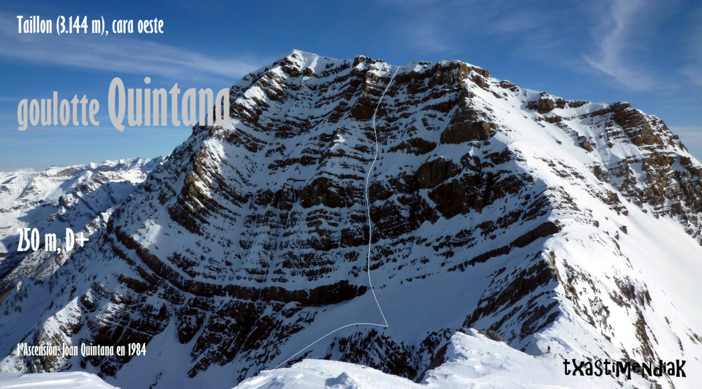
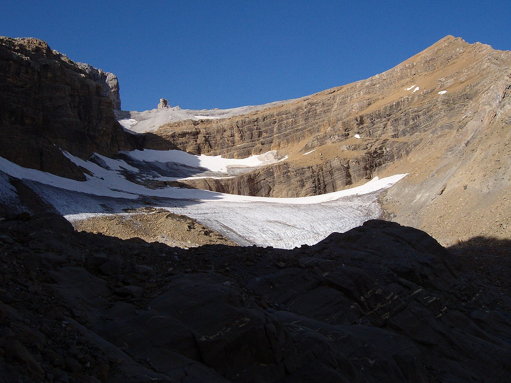

| INICIO | Cilindro de Marboré | Pico de Marboré | Monte Perdido | Pico Añisclo | Taillón |
|   |
El pico Taillón, también conocido como punta Negra, es una cumbre de Los Pirineos situada en la frontera entre España y Francia, dentro del parque nacional de Ordesa y Monte Perdido. Está considerada una de las cimas de 3000 m más fáciles del macizo de Monte Perdido, siendo el acceso habitual desde la Brecha de Rolando a la Falsa Brecha y al Dedo y, desde aquí, por la relativamente fácil cresta este hasta la cima. Se encuentra el circo de Gavarnie en su cara superior. |
||||